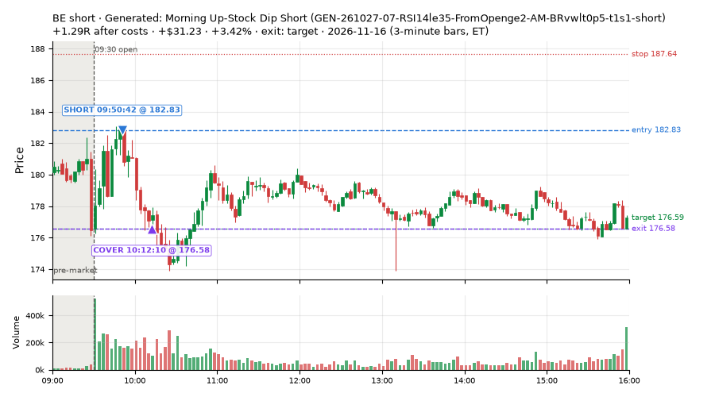
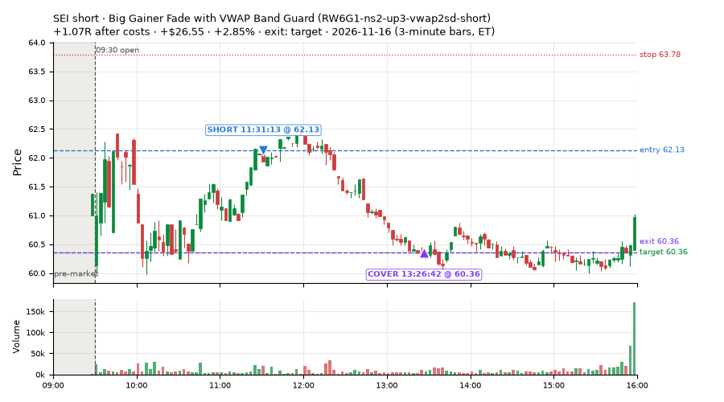
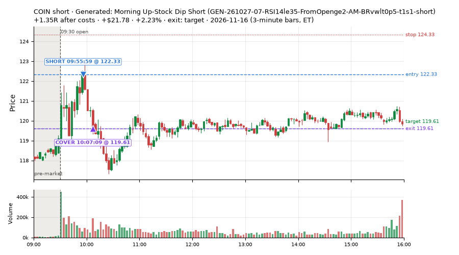
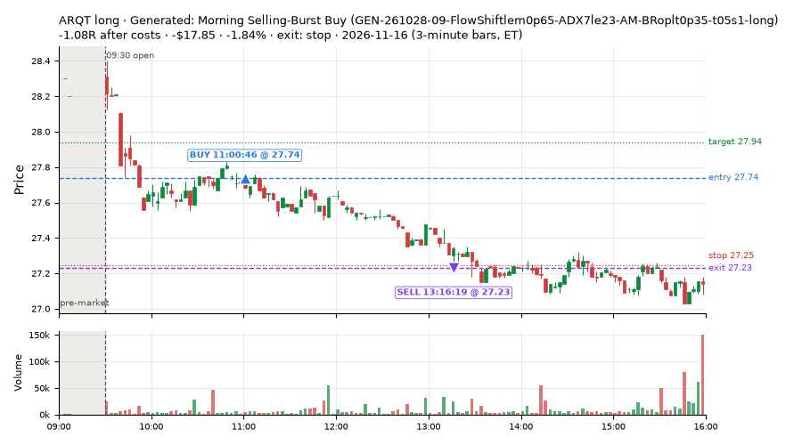
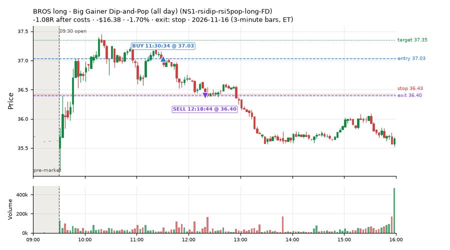
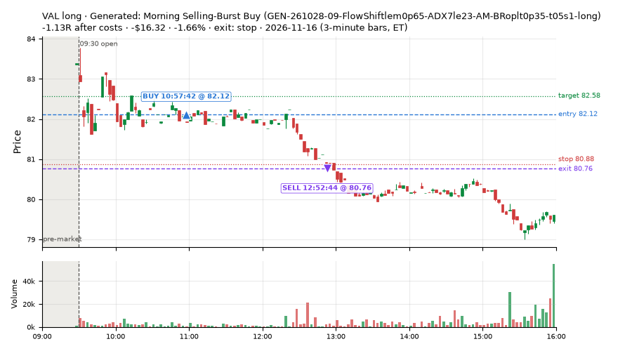
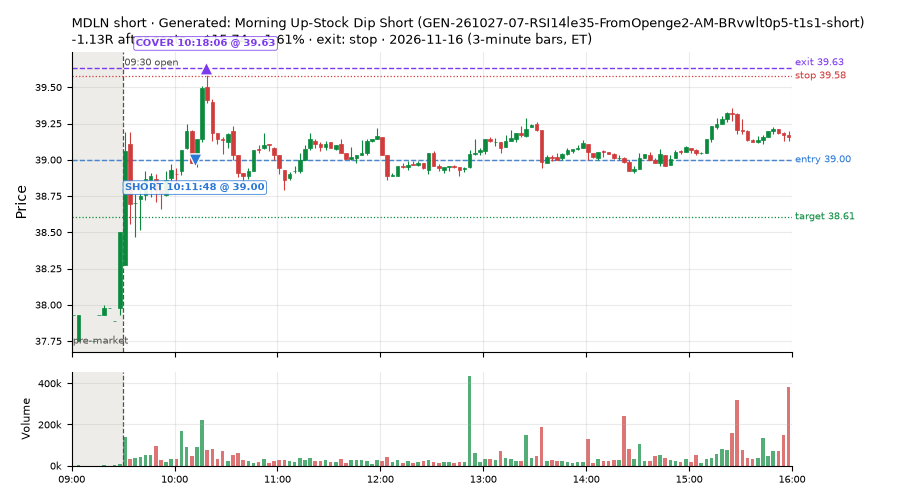
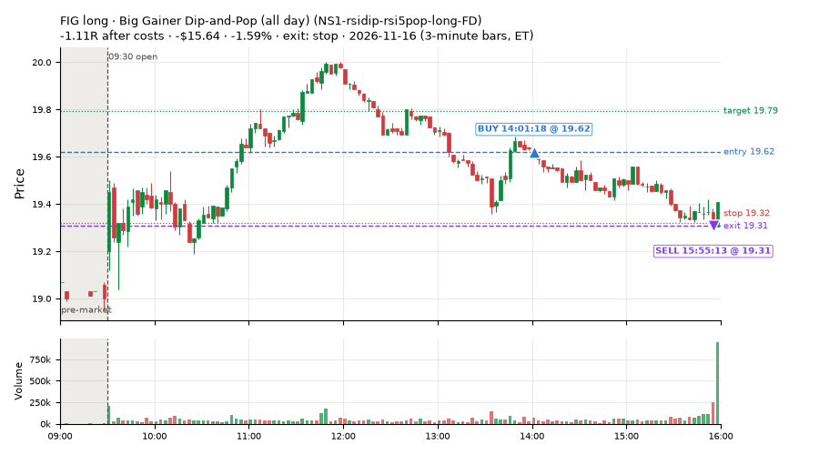

25 trades · win rate 44% · P/L $8.95
PROBATION: no live setup has passed both locked test periods. 10 owner-directed setups added 2026-10-08 (MarcoFlow top 5 + 5 new), untested live. RW6G1 (RW6 + VWAP band guard) added 2026-10-09, probation.

| Symbol | Setup | Side | In | Out | Entry | Exit | Exit reason | % gained | P/L |
|---|---|---|---|---|---|---|---|---|---|
| BE | Generated: Morning Up-Stock Dip Short (GEN-261027-07-RSI14le35-FromOpenge2-AM-BRvwlt0p5-t1s1-short) | short | 09:50 | 10:12 | 182.83 | 176.58 | target | +3.42% | $31.23 |
| SEI | Big Gainer Fade with VWAP Band Guard (RW6G1-ns2-up3-vwap2sd-short) | short | 11:31 | 13:26 | 62.13 | 60.36 | target | +2.85% | $26.55 |
| COIN | Generated: Morning Up-Stock Dip Short (GEN-261027-07-RSI14le35-FromOpenge2-AM-BRvwlt0p5-t1s1-short) | short | 09:55 | 10:07 | 122.33 | 119.61 | target | +2.23% | $21.78 |
| Symbol | Setup | Side | In | Out | Entry | Exit | Exit reason | % lost | P/L |
|---|---|---|---|---|---|---|---|---|---|
| ARQT | GEN-261028-09-FlowShiftlem0p65-ADX7le23-AM-BRoplt0p35-t05s1-long | long | 11:00 | 13:16 | 27.74 | 27.23 | stop | -1.84% | $-17.85 |
| BROS | NS1-rsidip-rsi5pop-long-FD | long | 11:30 | 12:18 | 37.03 | 36.40 | stop | -1.70% | $-16.38 |
| VAL | GEN-261028-09-FlowShiftlem0p65-ADX7le23-AM-BRoplt0p35-t05s1-long | long | 10:57 | 12:52 | 82.12 | 80.76 | stop | -1.66% | $-16.32 |
| MDLN | GEN-261027-07-RSI14le35-FromOpenge2-AM-BRvwlt0p5-t1s1-short | short | 10:11 | 10:18 | 39.00 | 39.63 | stop | -1.61% | $-15.74 |
| FIG | NS1-rsidip-rsi5pop-long-FD | long | 14:01 | 15:55 | 19.62 | 19.31 | stop | -1.59% | $-15.64 |








Signal to fill: median 1s, 90th percentile 3s (25 trades). Bars close each minute; the order follows the bar close.
Best excursion (MFE): median 0.36R; worst (MAE) median 1.00R. 48% of trades never got +0.25R in our favour; 0 reached +1R and still closed at or below 0.
| Symbol | Setup | Best R | Worst R | Closed R |
|---|---|---|---|---|
| SARO | GEN-261028-09-FlowShiftlem0p65-ADX7le23-AM-BRoplt0p35-t05s1-long | +0.53 | -1.26 | -1.27 |
| SHEL | GEN-261028-09-FlowShiftlem0p65-ADX7le23-AM-BRoplt0p35-t05s1-long | +0.23 | -1.01 | -1.09 |
| RBA | GEN-261028-09-FlowShiftlem0p65-ADX7le23-AM-BRoplt0p35-t05s1-long | +0.12 | -1.06 | -1.18 |
| DTE | GEN-261028-09-FlowShiftlem0p65-ADX7le23-AM-BRoplt0p35-t05s1-long | +0.02 | -1.10 | -1.22 |
| VAL | GEN-261028-09-FlowShiftlem0p65-ADX7le23-AM-BRoplt0p35-t05s1-long | +0.10 | -1.03 | -1.13 |
| Entry time | Trades | Win | Avg R | P/L |
|---|---|---|---|---|
| 09:50-10:30 | 5 | 80% | +0.49 | $57.19 |
| 10:30-11:30 | 15 | 33% | -0.47 | $-36.07 |
| 11:30-13:00 | 3 | 67% | +0.14 | $15.67 |
| 14:00-16:00 | 2 | 0% | -1.12 | $-27.84 |
| Setup | Trades | Win | Avg R after costs | Adj R (net of SPY) | Avg R ex-market (all sessions) | P/L |
|---|---|---|---|---|---|---|
| Generated: Morning Up-Stock Dip Short (GEN-261027-07-RSI14le35-FromOpenge2-AM-BRvwlt0p5-t1s1-short) | 5.0 | 80% | +0.49 | +0.25 | -0.39 (beta -1.41, n 31) | $57.19 |
| Generated: Morning Selling-Burst Buy (GEN-261028-09-FlowShiftlem0p65-ADX7le23-AM-BRoplt0p35-t05s1-long) | 13.0 | 23% | -0.64 | +0.09 | -0.58 (beta +0.09, n 13) | $-67.02 |
| Big Gainer Dip-and-Pop (all day) (NS1-rsidip-rsi5pop-long-FD) | 4.0 | 25% | -0.72 | -0.41 | -1.27 (beta -1.76, n 9) | $-38.72 |
| Big Loser VWAP Reclaim Fade (NS3-failed-vwap-reclaim-short) owner-directed; holdouts once: Sep-Oct +0.119R n65, Apr-Jun -0.136R n524 | 1.0 | 100% | +0.99 | +0.58 | – | $21.12 |
| Big Gainer Fade with VWAP Band Guard (RW6G1-ns2-up3-vwap2sd-short) owner-directed; two-year history +0.26R n424 t2.39 (required 4.76), positive up and down sessions; locked block not scored | 2.0 | 100% | +0.71 | +0.40 | – | $36.38 |
Market direction (SPY, beta 1) accounted for $-61.65 of today's $8.95; the rest ($70.60) came from the setups themselves. Avg R net of SPY: +0.08 (incl. a hedge leg's cost; report only).
21 setups live today. Today: 70 signals, 25 taken, 1 lost because another setup held the symbol (1%). Since 2026-11-12 (3 sessions): 344 signals, 140 taken, 1 lost to other setups (0%). Peak open positions today 18 of 200 slots. Earnings blackout removed 409 symbols before scanning.
Simulated playing time (not live): 204 what-if trades of signals not taken, avg -0.17R, 44% winners; of them 1 lost to another setup (avg +0.04R).
Silent: CWT04-backside-lh-a25-short, IDX5-spy050-0945-3x-trail, LD8-spy-dip030-breadthturn-spxl-holdtr-long, LIQ-pdl-sweep-open15-vwap-long
| Prio | Setup | Today sig / taken | Sessions | Signals / taken / trades | Taken/day | Expected/day | Lost to other setups | Lost to (setup n) | Top skip reasons | SIMULATED: not-taken n / avg R / win | Verdict |
|---|---|---|---|---|---|---|---|---|---|---|---|
| 1 | Backside Lower-High Short (big runner) CWT04-backside-lh-a25-short | 0 / 0 | 3 | 0 / 0 / 0 | 0.00 | – | 0 | – | – | 0 / – | silent no signals in 3 session(s); no expected rate on file |
| 2 | Generated: Late Uptrend Dip Buy (up day) GEN-261026-09-BBpctle0p3-SMA20slopege0p46-FromPCATRge0p45-LATE-BRvwgt0p6-t05s05-long | 0 / 0 | 1 | 0 / 0 / 0 | 0.00 | – | 0 | – | – | 0 / – | quiet - wait no signals in 1 session(s); too early to tell |
| 3 | Generated: PM New-Low Buy (strong mkt) GEN-261023-05-NewLOD-SMA20dlem0p94-ORLdistlem0p24-PM-BRopgt0p65-hold-long | 0 / 0 | 1 | 0 / 0 / 0 | 0.00 | – | 0 | – | – | 0 / – | quiet - wait no signals in 1 session(s); too early to tell |
| 4 | Generated: Open Below-VWAP Turn Buy (QQQ up) GEN-261021-10-MACDhge0p079-VWAPbarslem7-OPEN-QQQup-t1s05-long | 0 / 0 | 1 | 0 / 0 / 0 | 0.00 | – | 0 | – | – | 0 / – | quiet - wait no signals in 1 session(s); too early to tell |
| 5 | Generated: Lunch Wide-Range Short (SPY down) GEN-261021-03-RSI5le34-Ret15mATRge0p12-DayRngVsPrevge1p2-LUNCH-SPYltm0p25-t05s1-short | 0 / 0 | 1 | 0 / 0 / 0 | 0.00 | – | 0 | – | – | 0 / – | quiet - wait no signals in 1 session(s); too early to tell |
| 6 | Generated: PM Big Red Bar Buy (up day) GEN-261028-10-BarRngATRge0p18-Flow3lem0p54-FromPCATRge0p28-PM-SPYgt0p5-hold-long | 0 / 0 | 1 | 0 / 0 / 0 | 0.00 | – | 0 | – | – | 0 / – | quiet - wait no signals in 1 session(s); too early to tell |
| 7 | Generated: Late Failed-Breakdown Pop Short GEN-261023-09-ORBfailDn-Ret15mge0p54-LATE-BRvwgt0p7-holdtr-short | 0 / 0 | 1 | 0 / 0 / 0 | 0.00 | – | 0 | – | – | 0 / – | quiet - wait no signals in 1 session(s); too early to tell |
| 8 | Generated: Late-AM Divergence Short (quiet) GEN-261021-01-BearDiv-RVolDayle0p47-BarsSinceHODle0-LAM-SPYltm0p25-t1s1-short | 2 / 0 | 1 | 2 / 0 / 0 | 0.00 | – | 0 | – | spread / quote / size 1, other 1 | 2 / +0.79R / 100% | slow no entries yet |
| 9 | Index Dip Bounce 5 3x S&P IDX5-spy050-0945-3x-trail | 0 / 0 | 3 | 0 / 0 / 0 | 0.00 | – | 0 | – | – | 0 / – | silent no signals in 3 session(s); no expected rate on file |
| 10 | * SPY Dip of 0.30%, Breadth Turn (SPXL, trailing) (near-miss) LD8-spy-dip030-breadthturn-spxl-holdtr-long | 0 / 0 | 3 | 0 / 0 / 0 | 0.00 | – | 0 | – | – | 0 / – | silent no signals in 3 session(s); no expected rate on file |
| 11 | Prior-Day Low Sweep Reversal to VWAP LIQ-pdl-sweep-open15-vwap-long | 0 / 0 | 3 | 0 / 0 / 0 | 0.00 | – | 0 | – | – | 0 / – | silent no signals in 3 session(s); no expected rate on file |
| 12 | Big Gainer Fade with VWAP Band Guard RW6G1-ns2-up3-vwap2sd-short | 3 / 2 | 3 | 6 / 4 / 4 | 1.33 | 0.40 | 0 | – | spread / quote / size 1, other 1 | 2 / +0.96R / 100% | slow 6.7 entries/week; ~9 weeks to 60 trades |
| 13 | Generated: Morning Selling-Burst Buy GEN-261028-09-FlowShiftlem0p65-ADX7le23-AM-BRoplt0p35-t05s1-long | 26 / 13 | 1 | 26 / 13 / 13 | 13.00 | – | 0 | – | spread / quote / size 8, other 5 | 13 / -0.63R / 31% | ok 65.0 entries/week |
| 14 | Generated: Morning New-High Short (SPY down) GEN-261019-08-NewHOD-Slope6ge0p03-DayRngVsPrevge1p5-AM-SPYdn-hold-short | 4 / 0 | 1 | 4 / 0 / 0 | 0.00 | – | 0 | – | other 3, spread / quote / size 1 | 4 / +1.09R / 75% | slow no entries yet |
| 15 | Generated: Late Pullback Buy (MACD rising) GEN-261027-01-MACDhge0p12-Ret15mATRlem0p069-LATE-BRvwgt0p5-t05s1-long | 0 / 0 | 3 | 7 / 2 / 2 | 0.67 | – | 0 | – | spread / quote / size 4, other 1 | 5 / +0.21R / 60% | slow 3.3 entries/week; ~18 weeks to 60 trades |
| 16 | Generated: Open Up-Day Bounce Short GEN-261026-05-Ret15mATRge0p042-FromPCATRge0p28-ORHdistlem0p38-OPEN-BRopgt0p5-hold-short | 0 / 0 | 1 | 0 / 0 / 0 | 0.00 | – | 0 | – | – | 0 / – | quiet - wait no signals in 1 session(s); too early to tell |
| 17 | Generated: Morning RSI Surge Buy GEN-261020-07-RSIslopege19-LowWickge0p33-ATRdge4p4-AM-BRvwgt0p7-hold-long | 0 / 0 | 1 | 0 / 0 / 0 | 0.00 | – | 0 | – | – | 0 / – | quiet - wait no signals in 1 session(s); too early to tell |
| 18 | Generated: Morning Up-Stock Dip Short GEN-261027-07-RSI14le35-FromOpenge2-AM-BRvwlt0p5-t1s1-short | 27 / 5 | 3 | 113 / 31 / 31 | 10.33 | – | 0 | – | not shortable / shorts off 46, spread / quote / size 26, other 10 | 82 / -0.27R / 38% | ok 51.7 entries/week |
| 19 | Generated: Morning Weak-Bounce Short (quiet) GEN-261022-08-EMAdChglem0p094-Flow3ge1-RVolDayle0p59-AM-SPYgt0p25-holdtr-short | 0 / 0 | 1 | 0 / 0 / 0 | 0.00 | – | 0 | – | – | 0 / – | quiet - wait no signals in 1 session(s); too early to tell |
| 20 | Big Loser VWAP Reclaim Fade NS3-failed-vwap-reclaim-short | 1 / 1 | 3 | 8 / 4 / 4 | 1.33 | 3.03 | 0 | – | not shortable / shorts off 2, spread / quote / size 2 | 4 / +0.83R / 100% | slow 6.7 entries/week; ~9 weeks to 60 trades |
| 21 | Big Gainer Dip-and-Pop (all day) NS1-rsidip-rsi5pop-long-FD | 7 / 4 | 3 | 14 / 9 / 9 | 3.00 | 5.39 | 1 | GEN-261027-07-RSI14le35-FromOpenge2-AM-BRvwlt0p5-t1s1-short 1 | spread / quote / size 2, symbol held by another setup 1, price through stop/target 1 | 5 / +0.03R / 80% | ok 15.0 entries/week |
Every trade is attached as a CSV you can open and edit in Excel or Google Sheets. Live page: https://misiti15.github.io/MCF/live/